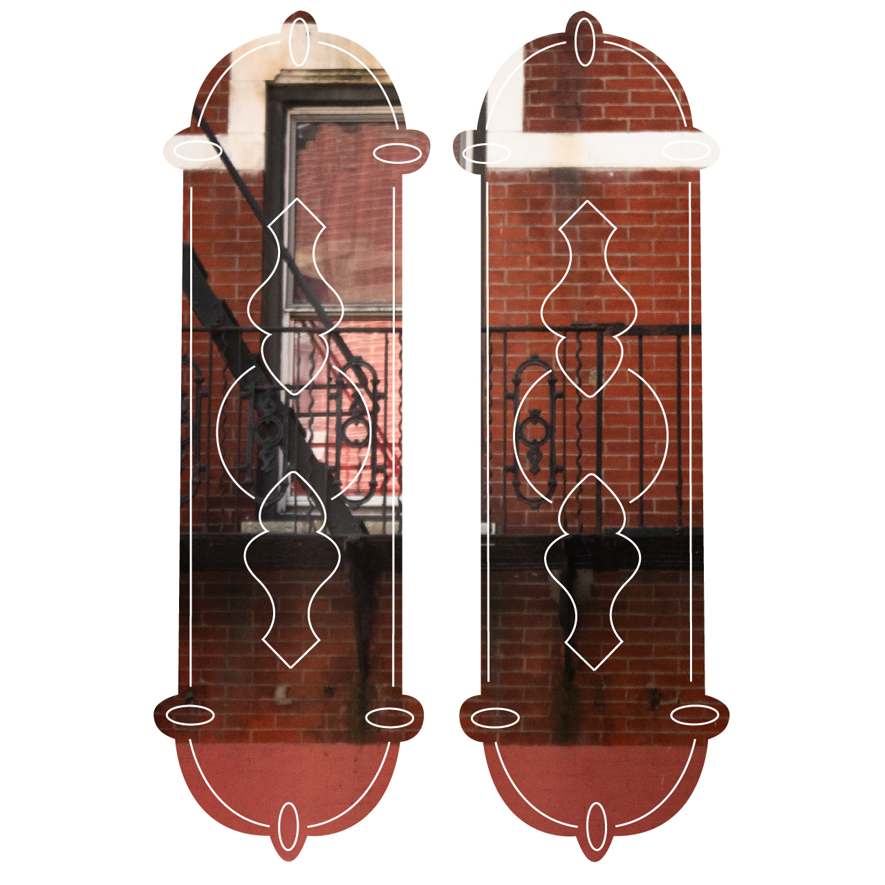
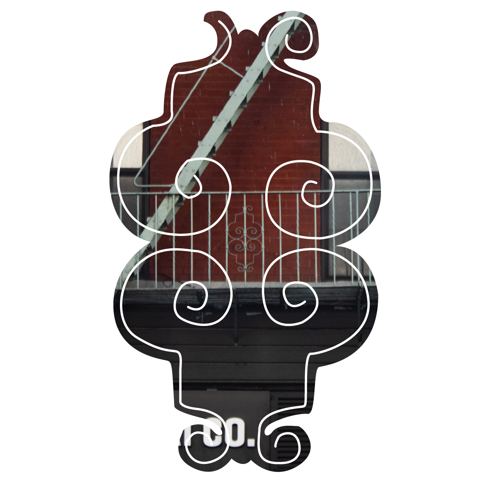
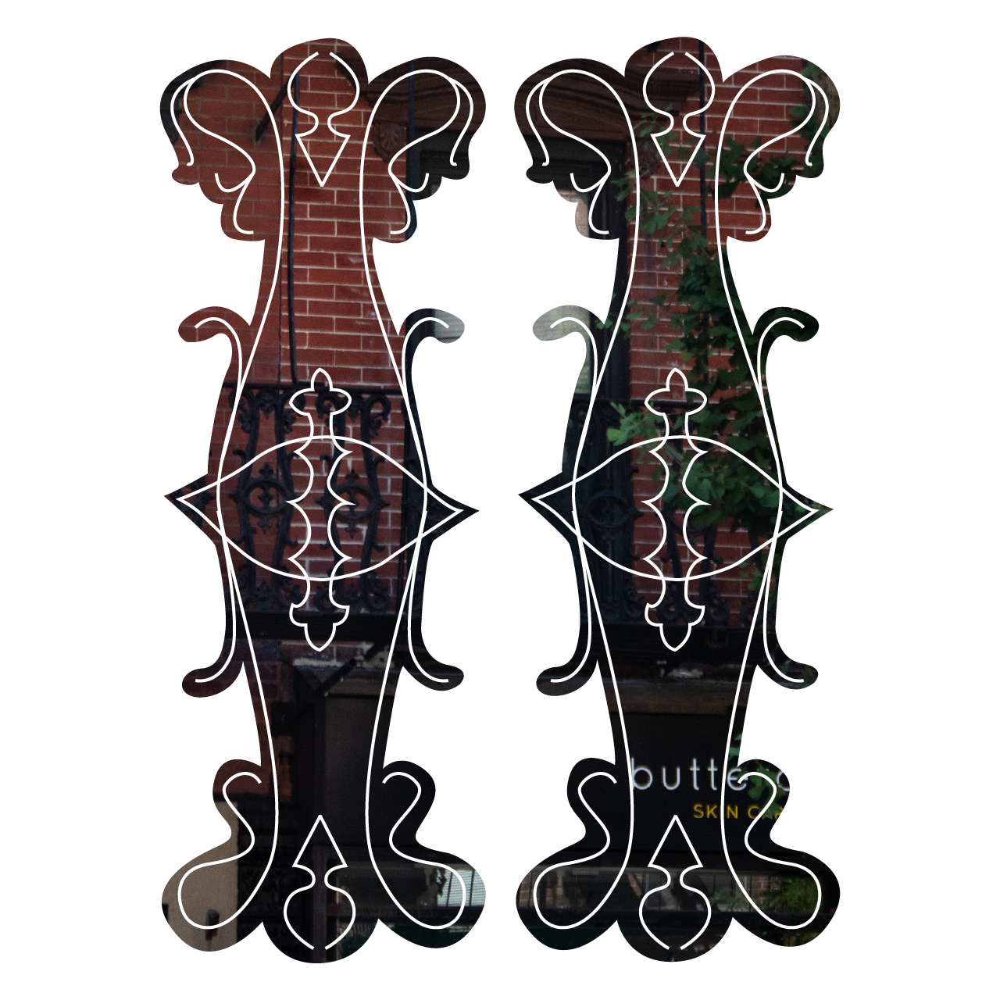
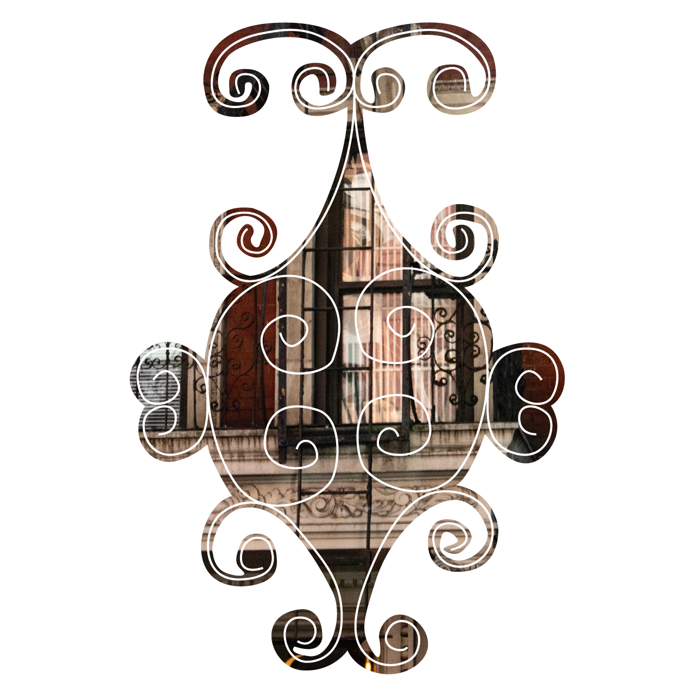
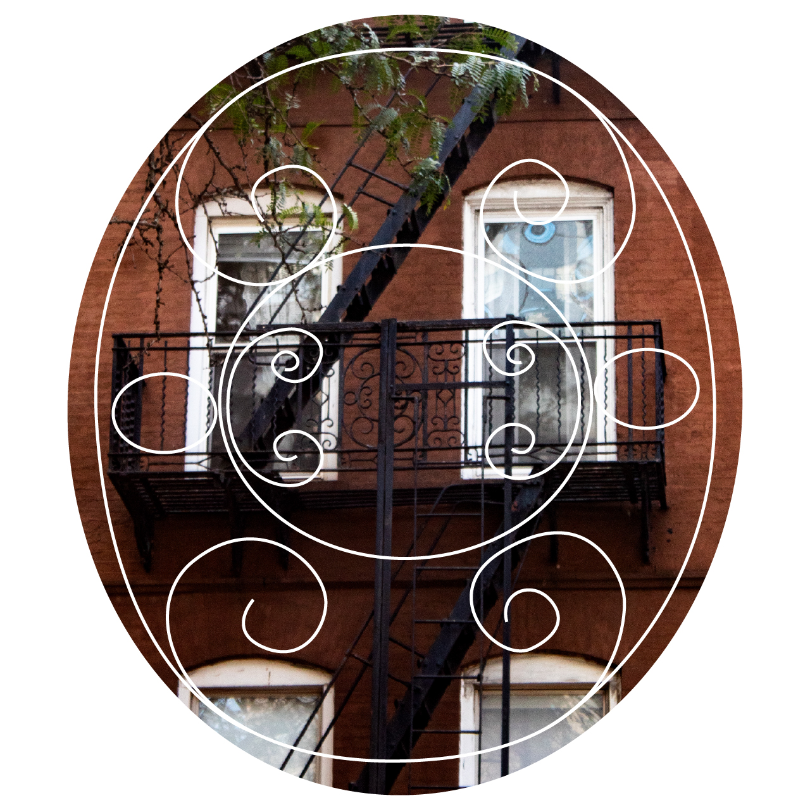
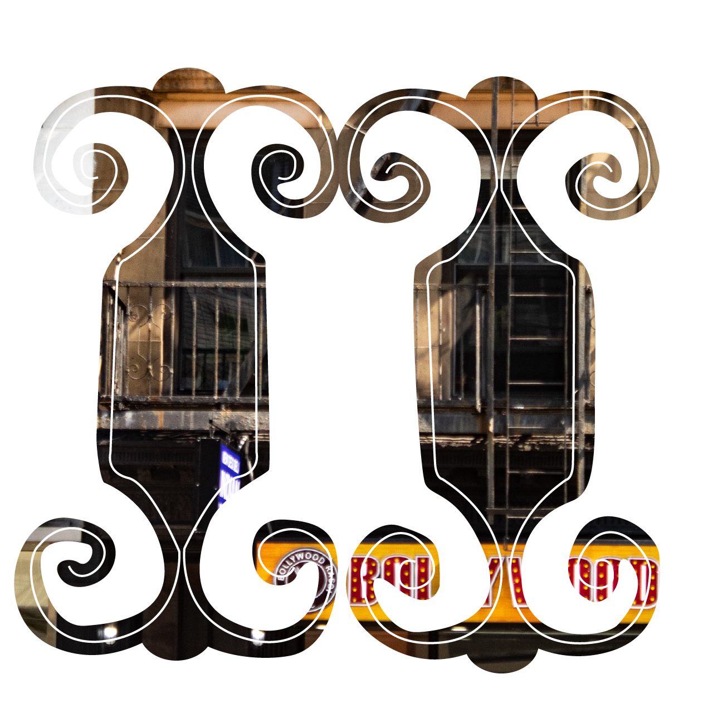
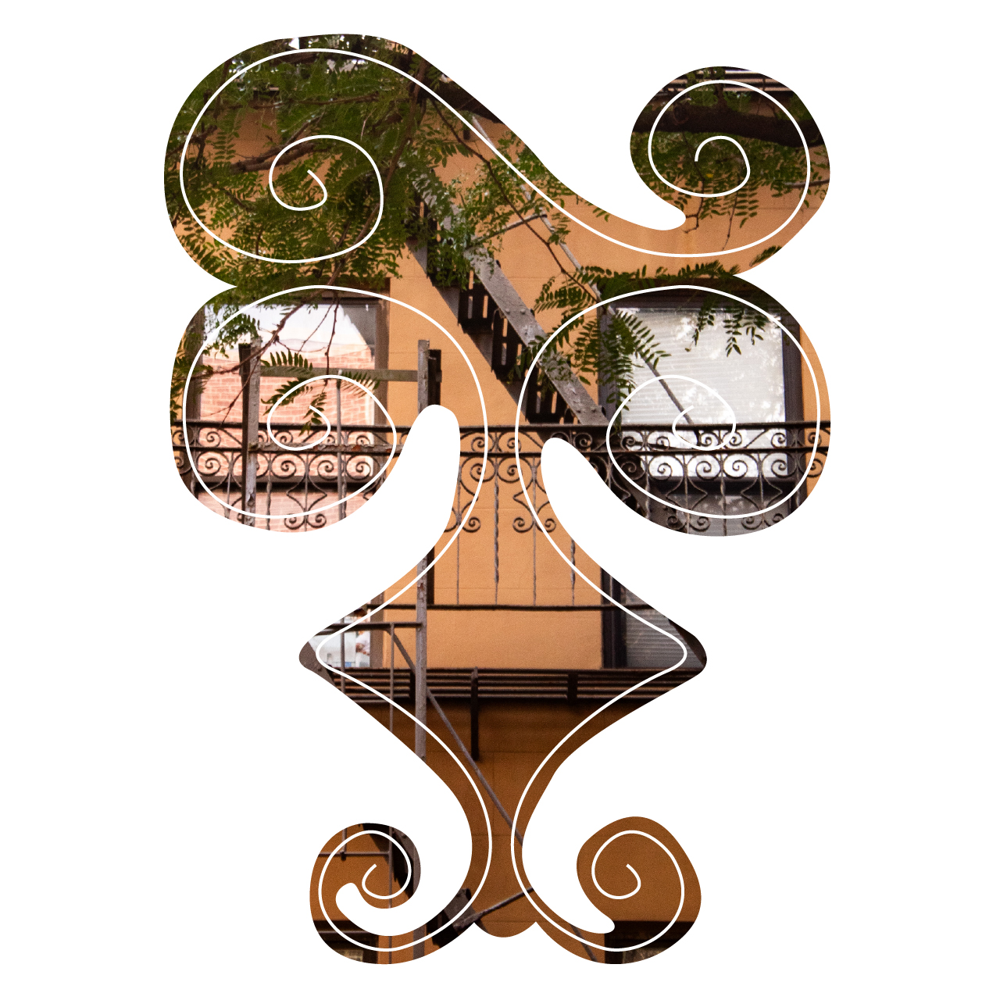

New York City is a city of constant rebuilding, constant reshaping-- longevity is a rarity amid a constantly reshaping public housed within its buildings. The fire escape is an artifact of this rebuilding, a remnant of a society that responded to public safety concerns in a manner once seen as cutting edge and innovative.
The emergence of the fire escape was one of pure necessity, utilitarian in both function and form... and yet, a human touch has been imbued in each and every one. Little to nothing is known about the artisans who created these now iconic wrought iron structures beyond a handful of company names. Countless questions remain forever unanswered: Who designed these beautiful swirling motifs? What was the intention behind them? Why is this handiwork so appreciated yet simultaneously so ignored?
With the passage of time and developments in urban design the fire escape has been rendered practically obsolete, and thus the last of the artisans have retired or shifted their work elsewhere. However, the death of this craft does not necessitate the death of the fire escape itself. New Yorkers themselves have been imbuing these structures with life well beyond their creation for decades now-- whether they be utilized as a place to dry laundry, home houseplants or a miniature garden, or reimagined into a porch to capture what little sun one can, these objects of utilitarian origin have been shaped into something innately human.
Through a series of images captured on my walks up and down Manhattan, texts collected from various publications and authors, and layered illustrative work, I hope to capture this eternal life. In the face of constant change and innovation, the initial era of the fire escape may have concluded... but the life imbued in each of the structures ensures that there still are many eras to come for these structures of safety, artistry, and humanity.